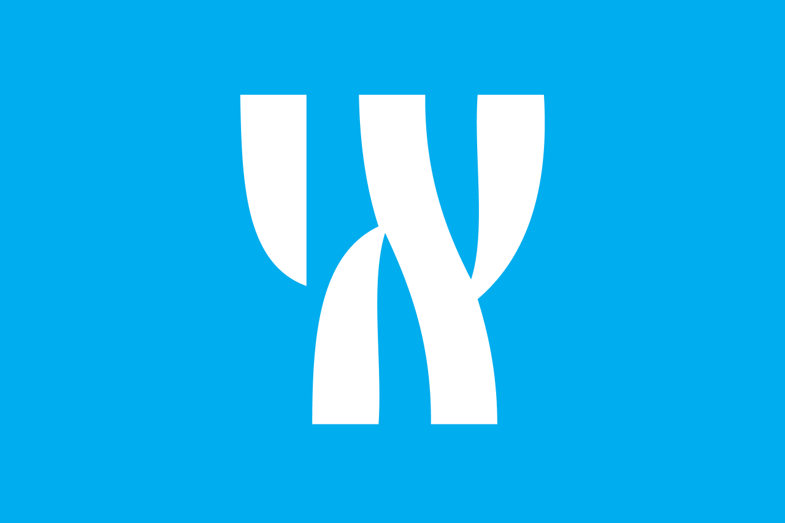
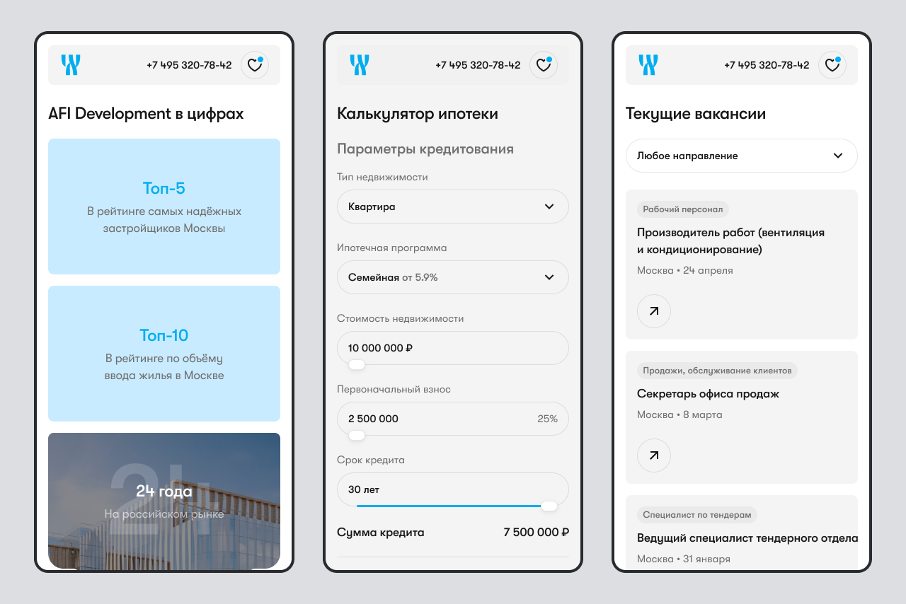

AFI Development
Один из крупнейших девелоперов жилой и коммерческой недвижимости в Москве. Основная задача сервиса — помочь пользователю познакомиться с компанией, изучить жилые комплексы и подобрать недвижимость в едином интерфейсе.

Период работы
С марта по июнь 2025 года.
Роль
UX/UI-дизайнер в составе дизайн-команды студии.
Зона ответственности
Проектирование архитектуры сайта, разработка пользовательских сценариев, дизайн интерфейсов продуктовой и корпоративной частей платформы, создание адаптивных макетов и подготовка проекта к разработке.
Коммуникация
Работал совместно с арт-директором студии, который взаимодействовал с заказчиком. Участвовал в обсуждении решений, подготовке макетов и согласовании интерфейсов перед передачей в разработку.

Спроектировал архитектуру новой платформы
На момент начала проекта основной сайт компании выполнял роль корпоративного ресурса, а информация о жилых комплексах размещалась на отдельных сайтах каждого проекта. Задачей редизайна было объединить корпоративную и продуктовую части в рамках единой платформы, чтобы пользователи могли получить всю необходимую информацию о компании и её объектах без переходов между разными сайтами.
Что сделал
- Спроектировал новую архитектуру сайта и карту страниц.
- Разработал структуру всех страниц в формате wireframe.
- Определил состав и последовательность контентных блоков совместно с заказчиком.
- Подготовил основу для дальнейшего проектирования интерфейсов.
Разработал продуктовую часть платформы
На момент начала проекта информация о каждом жилом комплексе размещалась на отдельном сайте. Задачей было перенести всю продуктовую часть в единый сервис, чтобы пользователь мог изучить проекты, подобрать недвижимость и оформить заявку, не переходя между разными сайтами. Особое внимание уделялось созданию универсальной структуры, которую можно было использовать для запуска новых проектов без разработки отдельных сайтов.
Что сделал
- Спроектировал главную страницу, объединив корпоративные материалы и продуктовые сценарии выбора недвижимости.
- Разработал страницу жилого комплекса, объединив функциональность отдельного сайта проекта в рамках единой платформы.
- Спроектировал каталог объектов недвижимости с фильтрацией и страницы отдельных помещений.
- Разработал сценарий работы с избранными объектами для сравнения и последующего обращения в отдел продаж.
- Подготовил универсальный набор компонентов и шаблонов, позволяющий запускать страницы новых жилых комплексов без проектирования отдельных сайтов.

Переработал корпоративную часть сайта
После завершения проектирования продуктовой части была переработана корпоративная часть сайта. Основной задачей стало сохранить существующий контент, обновив его структуру и визуальную подачу в рамках нового дизайна.
Что сделал
- Переработал структуру и интерфейсы существующих корпоративных разделов, сохранив их содержание и адаптировав под новую архитектуру сайта.
- Объединил разрозненные корпоративные материалы в единую систему с последовательными пользовательскими сценариями и единым визуальным языком.

Выводы
Работа над AFI Development показала важность проектирования архитектуры до начала визуального дизайна. Большая часть проекта была посвящена не созданию экранов, а формированию структуры платформы, объединяющей корпоративный сайт и продуктовые сервисы в единую экосистему. Именно такие задачи позволяют применять UX-подход на уровне всего продукта, а не отдельных интерфейсов.